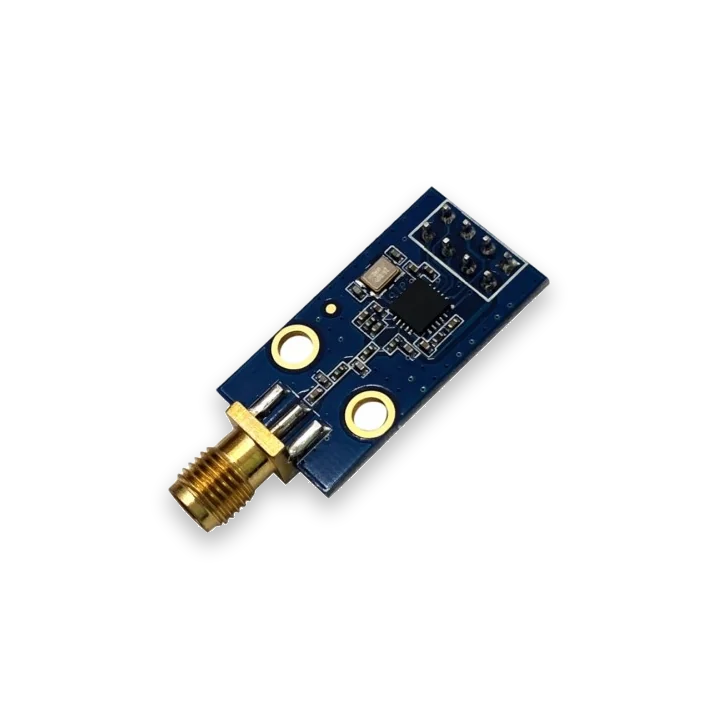

Most CC1101 breakout modules expect 3.3 V logic. Do not drive the radio with 5 V GPIO.
Sub-GHz radio module
CC1101 Sub-GHz module for ESP32
Wire a CC1101 Sub-GHz module to ESP32 or ESP32-S3. Use ESP32 Bit Pirate for SPI wiring checks, scan, receive, record and replay lab captures.
Start here when wiring a CC1101 to ESP32, checking the SPI pinout, or using ESP32 Bit Pirate as a Sub-GHz scanner for authorized lab captures. Confirm safe wiring before moving to protocol and recipe pages.
- scan
- receive
- record
- Sub-GHz

workflow
Start with CC1101 receive-only checks
Confirm 3.3 V power, SPI pins, GDO lines and antenna before scanning. Start with sweep or receive-only captures, then record or replay only on owned, authorized lab devices.
- 01
Choose an integrated T-Embed CC1101 board or wire an external CC1101 module.
- 02
Confirm 3.3 V power, common ground and SPI/GDO wiring before powering the target.
- 03
Start with scan, sweep or waterfall before trying to decode, receive or record anything.
- 04
Receive or record only signals from hardware you own or are authorized to test.
- 05
Move from the module page to the Sub-GHz protocol page for exact firmware syntax, including receive, record, load and ear workflows.
Example CLI flow
mode subghz
config
setfrequency
scan
sweep
waterfall
receive
record
loadUse this CC1101 sequence as a receive-first check, then open the Sub-GHz page for command options and radio limits.
hardware reminders
CC1101 radio wiring notes before power
Confirm 3.3 V power, SCK/MOSI/MISO, CS, GDO wiring and an antenna matched to the CC1101 band before radio tests.
Wiring View
Use an antenna and module variant suitable for the band you are testing.
Integrated boards may already reserve the radio pins; external wiring must not reuse pins occupied by display, SD or keyboard hardware.
Before wiring a module or target chip, check pinout, voltage, ground reference and whether the selected ESP32-S3 board has the required pins free.
task-level guides
Detailed CC1101 Sub-GHz module recipes
Use these CC1101 guides for Sub-GHz wiring, receive-only scans, captures and controlled lab signal files.
Wire CC1101 Sub-GHz module
Task-level guide with wiring, commands and troubleshooting steps.
Scan Sub-GHz frequency with CC1101Task-level guide with wiring, commands and troubleshooting steps.
Sweep Sub-GHz activityTask-level guide with wiring, commands and troubleshooting steps.
Receive a Sub-GHz frameTask-level guide with wiring, commands and troubleshooting steps.
Record a Sub-GHz signal to LittleFSTask-level guide with wiring, commands and troubleshooting steps.
what it is
What CC1101 is used for
CC1101 modules are low-cost Sub-GHz radios commonly used for 315/433/868/915 MHz lab experiments, remote-control analysis, sensors and simple RF links.
practical value
Why use CC1101 with ESP32 Bit Pirate
ESP32 Bit Pirate gives the radio module a CLI and repeatable recipe workflow: scan frequency activity, receive frames, record captures and connect the RF path to board-specific wiring notes.
common symptoms
Common problems with CC1101 Sub-GHz module
CC1101 issues usually trace back to band variant, antenna, 3.3 V power, SPI chip select or GDO wiring. Check RF setup before blaming firmware.
No activity found
Check frequency, antenna, module power, CS/GDO wiring and whether the signal source is actually active.
Unstable receive
Reduce cable length, confirm 3.3 V power and keep the radio away from noisy wiring.
Wrong module variant
CC1101 breakout boards vary by frequency band and crystal quality; confirm the exact module before debugging firmware.
pages
Useful CC1101 next pages
Use these pages to move from CC1101 wiring into Sub-GHz scanning, receive captures, board choices and hardware context.
Sub-GHz
Sub-GHz mode reference for CC1101 scan, receive, record and replay commands.
SPISPI bus reference for CC1101 wiring and chip-select checks.
T-Embed CC1101Board-specific notes for using CC1101 Sub-GHz module with ESP32 Bit Pirate.
ESP32-S3 DevKitBoard-specific notes for using CC1101 Sub-GHz module with ESP32 Bit Pirate.
Wire CC1101 Sub-GHz moduleConnect power, SPI and antenna before RF tests.
Scan Sub-GHz frequencyCheck activity around a selected Sub-GHz frequency.
Receive a Sub-GHz frameCapture a frame from a known lab transmitter.
Record to LittleFSSave a Sub-GHz capture for later analysis.
Web Serial TerminalUse Web Serial to drive Sub-GHz scan, receive and record commands from the browser.
Hardware ecosystemDock, adapters, level notes and physical hardware context.
module-specific answers
CC1101 Sub-GHz module FAQ
Quick answers about CC1101 wiring, authorized Sub-GHz captures, board choice and safe receive/record tests.
Can ESP32 Bit Pirate use a CC1101 module?
Yes. ESP32 Bit Pirate includes Sub-GHz / CC1101 workflows and board-specific routes such as T-Embed CC1101.
Which board should I use for CC1101?
Use any ESP32 Bit Pirate board with enough free GPIO to wire the CC1101 module.
Can I replay arbitrary RF signals?
No. Keep RF workflows to owned, authorized lab targets and comply with local radio rules.
Is CC1101 the same as Wi-Fi or BLE?
No. CC1101 is for Sub-GHz radio, while Wi-Fi and BLE use different ESP32-S3 radio stacks.
Where should I start?
Start with the CC1101 wiring recipe, then the Sub-GHz protocol page and scan/receive recipes.

project
CC1101 Sub-GHz inside ESP32 Bit Pirate.
The CC1101 page connects Sub-GHz protocol notes, radio recipes, compatible boards and hardware wiring paths for controlled RF bench work.